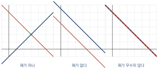
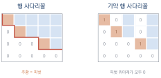
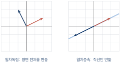
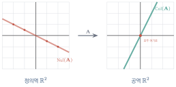

선형방정식의 풀이
이 장을 마치면
6장에서 \(\mm{A}\vv{x} = \vv{b}\)를 \(\vv{x} = \mm{A}\inv\vv{b}\)로 풀었다. 깔끔하지만 실제 컴퓨터는 이렇게 계산하지 않는다. 역행렬을 구하는 비용이 방정식을 푸는 비용보다 크고, 오차도 더 크기 때문이다.
컴퓨터가 실제로 쓰는 방법은 여러분이 중학교에서 배운 그 방법 — 소거법이다. 식을 더하고 빼서 미지수를 하나씩 지워 나가는 것이다. 다만 규모가 다르다. 미지수가 백만 개인 방정식에서도 같은 원리가 작동하도록 절차를 다듬어 놓은 것이 가우스 소거법이며, 그 과정을 행렬로 기록해 둔 것이 LU 분해다.
이 장에서는 소거법을 직접 구현해 본다. 그리고 그 과정에서 자연스럽게 등장하는 개념들 — 랭크, 일차독립, 열공간, 영공간 — 이 사실은 "해가 몇 개인가"라는 질문에 답하기 위한 언어임을 알게 될 것이다.
8.1 선형 방정식과 소거법
방정식, 해, 해집합
미지수가 하나 이상 포함된 등식을 방정식이라 하고, 그것을 참으로 만드는 값을 해solution라고 한다. 미지수의 차수가 1인 방정식을 선형 방정식linear equation, 여러 개를 묶은 것을 연립일차방정식system of linear equations이라 한다.
미지수 하나짜리 \(2x + 6 = 12\)는 해가 \(x=3\) 하나뿐이다. 그런데 미지수가 둘인 \(x + y = 5\)는 \((1,4), (2,3), (0,5), \ldots\)처럼 해가 무수히 많다. 이 모든 해의 모임을 해집합solution set이라 하며, 평면에서는 직선을 이룬다.
식을 하나 더 주면 상황이 달라진다.
두 조건을 동시에 만족해야 하므로 두 직선의 교점 \((3, 2)\) 하나만 남는다.

연립일차방정식의 해는 셋 중 하나다. 유일한 해가 있거나, 해가 없거나, 해가 무수히 많다. "해가 정확히 두 개"인 경우는 절대 없다. 왜 그런지는 8.3절에서 밝혀진다.
대입법과 소거법
연립방정식을 푸는 방법은 크게 둘이다.
대입법은 한 식을 한 미지수에 대해 정리한 뒤 다른 식에 넣는 방법이다. \(x + y = 5\)에서 \(x = 5 - y\)를 얻어 둘째 식에 넣으면 \((5-y) - y = 1\)이 되어 \(y = 2\)가 나온다.
소거법은 식에 상수를 곱하고 서로 더하거나 빼서 미지수를 지우는 방법이다. 위 두 식을 그냥 더하면 \(2x = 6\)이 되어 \(y\)가 사라진다.
컴퓨터가 쓰는 방법은 소거법이다. 절차가 기계적이어서 프로그램으로 옮기기 쉽고, 규모가 커져도 그대로 확장되기 때문이다.
다음을 소거법으로 푸시오.
첨가행렬 — 미지수를 지우고 숫자만 남기기
소거 과정에서 \(x\), \(y\)라는 문자는 사실 아무 역할도 하지 않는다. 자리만 지킬 뿐이다. 그렇다면 문자를 빼고 숫자만 적어도 되지 않을까?
\(\mm{A}\vv{x} = \vv{b}\)에서 계수행렬 \(\mm{A}\)의 오른쪽에 상수벡터 \(\vv{b}\)를 붙인 행렬
앞의 예제를 첨가행렬로 적으면 다음과 같다.
이제 방정식을 조작하는 대신 이 행렬의 행을 조작한다. 방정식에 허용되는 조작은 세 가지이며, 이를 기본행연산elementary row operation이라 한다.
| 연산 | 방정식에서의 의미 | |
|---|---|---|
| ① | 두 행을 교환한다 | 식의 순서를 바꾼다 |
| ② | 한 행에 0이 아닌 상수를 곱한다 | 식의 양변에 같은 수를 곱한다 |
| ③ | 한 행에 다른 행의 상수배를 더한다 | 한 식에 다른 식의 배수를 더한다 |
세 연산 모두 해집합을 바꾸지 않는다. 이것이 소거법이 정당한 이유다. 그리고 7장에서 보았듯 ③은 행렬식도 바꾸지 않고, ①은 부호만 바꾼다.
import numpy as np
# 첨가행렬 만들기
A = np.array([[2., 3.],
[4., -1.]])
b = np.array([8., 2.])
Ab = np.column_stack([A, b])
print('첨가행렬:\n', Ab)
# 기본행연산 ③ : R2 <- R2 - 2*R1
Ab[1] = Ab[1] - 2 * Ab[0]
print('\nR2 - 2R1 후:\n', Ab)
# 기본행연산 ② : R2 <- R2 / (-7)
Ab[1] = Ab[1] / Ab[1, 1]
print('\nR2 정규화 후:\n', Ab)첨가행렬: [[ 2. 3. 8.] [ 4. -1. 2.]] R2 - 2R1 후: [[ 2. 3. 8.] [ 0. -7. -14.]] R2 정규화 후: [[ 2. 3. 8.] [-0. 1. 2.]]
두 번째 행이 \(0 \cdot x + 1 \cdot y = 2\), 즉 \(y = 2\)를 뜻한다. 미지수 하나가 확정되었다. 이 값을 위 식에 되돌려 넣는 것을 역대입back substitution이라 한다.
기본행연산은 모두 되돌릴 수 있는 조작이다. 두 행을 바꿨으면 다시 바꾸면 되고, 3을 곱했으면 \(1/3\)을 곱하면 되고, 2배를 더했으면 2배를 빼면 된다. 되돌릴 수 있다는 것은 조작 전후의 방정식이 완전히 같은 정보를 담고 있다는 뜻이며, 따라서 해집합도 같다.
②에서 "0이 아닌" 상수라는 조건이 붙은 이유도 여기에 있다. 0을 곱하면 되돌릴 수 없고, 실제로 식 하나가 통째로 사라져 정보가 없어진다.
8.2 가우스 소거법
목표: 사다리꼴 만들기
가우스 소거법Gaussian elimination의 목표는 첨가행렬을 다음과 같은 계단 모양으로 바꾸는 것이다.
다음 세 조건을 만족하는 행렬을 행 사다리꼴row echelon form이라 한다.
- 모두 0인 행은 맨 아래에 모여 있다.
- 각 행에서 0이 아닌 첫 성분(피벗pivot)은 윗 행의 피벗보다 오른쪽에 있다.
- 피벗 아래의 성분은 모두 0이다.

행 사다리꼴이 되면 맨 아래 행에 미지수가 하나뿐이므로 즉시 풀리고, 그 값을 위로 대입해 가면 나머지도 차례로 풀린다.
전진 소거와 역대입
가우스 소거법은 두 단계로 이루어진다.
| 단계 | 하는 일 |
|---|---|
| 전진 소거forward elimination | 위에서 아래로 내려가며 피벗 아래를 0으로 만든다 |
| 역대입back substitution | 아래에서 위로 올라가며 미지수를 하나씩 확정한다 |
다음 연립방정식을 첨가행렬로 풀어 보자.
가우스 소거법 직접 구현하기
이제 이 절차를 코드로 옮겨 보자. 넘파이의 solve를 쓰지 않고 처음부터 만든다.
import numpy as np
def gauss_solve(A, b, verbose=False):
"""가우스 소거법으로 Ax = b를 푼다."""
A = np.asarray(A, dtype=float).copy()
b = np.asarray(b, dtype=float).copy()
n = len(b)
Ab = np.column_stack([A, b]) # 첨가행렬
# ① 전진 소거
for k in range(n):
# 부분 피벗팅: k열에서 절댓값이 가장 큰 행을 위로 올린다
p = k + np.argmax(np.abs(Ab[k:, k]))
if np.isclose(Ab[p, k], 0):
raise ValueError('피벗이 0입니다 (유일한 해가 없습니다)')
if p != k:
Ab[[k, p]] = Ab[[p, k]]
for i in range(k + 1, n):
factor = Ab[i, k] / Ab[k, k]
Ab[i] -= factor * Ab[k] # 기본행연산 ③
if verbose:
print(f'--- {k}열 소거 후 ---\n{np.round(Ab, 4)}')
# ② 역대입
x = np.zeros(n)
for i in range(n - 1, -1, -1):
x[i] = (Ab[i, -1] - Ab[i, i+1:n] @ x[i+1:]) / Ab[i, i]
return x
A = np.array([[1., 2., -1.],
[2., 1., 1.],
[-1., 1., 2.]])
b = np.array([2., 5., 3.])
x = gauss_solve(A, b, verbose=True)
print('\n해 :', np.round(x, 6))
print('넘파이 :', np.round(np.linalg.solve(A, b), 6))
print('검산 :', np.allclose(A @ x, b))--- 0열 소거 후 --- [[ 2. 1. 1. 5. ] [ 0. 1.5 -1.5 -0.5] [ 0. 1.5 2.5 5.5]] --- 1열 소거 후 --- [[ 2. 1. 1. 5. ] [ 0. 1.5 -1.5 -0.5] [ 0. 0. 4. 6. ]] --- 2열 소거 후 --- [[ 2. 1. 1. 5. ] [ 0. 1.5 -1.5 -0.5] [ 0. 0. 4. 6. ]] 해 : [1.166667 1.166667 1.5 ] 넘파이 : [1.166667 1.166667 1.5 ] 검산 : True
손으로 푼 결과와 정확히 일치한다. 이것이 넘파이 내부에서 일어나는 일의 본질이다.
부분 피벗팅이 필요한 이유
위 코드에서 np.argmax(np.abs(...)) 부분을 부분 피벗팅partial pivoting이라 한다. 그 열에서 절댓값이 가장 큰 성분을 피벗으로 올리는 조작이다. 왜 필요할까?
피벗이 0이면 나눗셈이 불가능하므로 행을 바꿔야 한다는 것은 명백하다. 그런데 0이 아니라 0에 가까운 값이어도 문제가 생긴다. 아주 작은 수로 나누면 결과가 매우 커지고, 그 과정에서 반올림 오차가 크게 증폭되기 때문이다.
import numpy as np
def gauss_no_pivot(A, b):
"""피벗팅 없이 소거 (교육용 — 실제로 쓰면 안 된다)"""
Ab = np.column_stack([np.asarray(A, float), np.asarray(b, float)])
n = len(b)
for k in range(n):
for i in range(k + 1, n):
Ab[i] -= (Ab[i, k] / Ab[k, k]) * Ab[k]
x = np.zeros(n)
for i in range(n - 1, -1, -1):
x[i] = (Ab[i, -1] - Ab[i, i+1:n] @ x[i+1:]) / Ab[i, i]
return x
# 첫 피벗이 아주 작은 경우
A = np.array([[1e-18, 1.],
[1., 1.]])
b = np.array([1., 2.])
print('피벗팅 없이 :', gauss_no_pivot(A, b))
print('피벗팅 있음 :', gauss_solve(A, b))
print('정확한 해 :', np.linalg.solve(A, b))피벗팅 없이 : [0. 1.] 피벗팅 있음 : [1. 1.] 정확한 해 : [1. 1.]
정답은 대략 \((1, 1)\)인데 피벗팅 없이 계산하면 \((0, 1)\)이 나온다. 첫 성분이 완전히 틀렸다. 행 하나만 바꿔 주면 해결되는 문제이지만, 그 한 줄이 없으면 계산 전체가 무의미해진다.
수치 선형대수에서 "수학적으로 맞는 것"과 "컴퓨터에서 작동하는 것"은 다르다. 부분 피벗팅은 그 차이를 보여 주는 가장 대표적인 예다. 넘파이의 solve는 물론 피벗팅을 포함한 LAPACK 루틴을 사용한다.
가우스–조르당 소거법
전진 소거만으로 행 사다리꼴을 만든 뒤 역대입하는 대신, 피벗 위쪽까지 모두 0으로 만들어 기약 행 사다리꼴로 가는 방법도 있다. 이를 가우스-조르당 소거법Gauss-Jordan elimination이라 한다. 계산량은 조금 더 많지만, 해가 바로 읽히고 역행렬을 구할 때 특히 편리하다.
\([\,\mm{A} \mid \Id\,]\)에서 시작해 왼쪽을 \(\Id\)로 만들면, 오른쪽에 \(\mm{A}\inv\)이 나타난다.
import numpy as np
def inverse_by_gauss_jordan(A):
"""가우스-조르당 소거법으로 역행렬을 구한다."""
A = np.asarray(A, dtype=float)
n = A.shape[0]
M = np.column_stack([A, np.eye(n)]) # [A | I]
for k in range(n):
p = k + np.argmax(np.abs(M[k:, k]))
if np.isclose(M[p, k], 0):
raise ValueError('특이행렬입니다')
M[[k, p]] = M[[p, k]]
M[k] = M[k] / M[k, k] # 피벗을 1로
for i in range(n):
if i != k:
M[i] -= M[i, k] * M[k] # 위아래 모두 소거
return M[:, n:] # 오른쪽 절반이 역행렬
A = np.array([[4., 7.], [2., 6.]])
print('직접 구현 :\n', inverse_by_gauss_jordan(A))
print('넘파이 :\n', np.linalg.inv(A))직접 구현 : [[ 0.6 -0.7] [-0.2 0.4]] 넘파이 : [[ 0.6 -0.7] [-0.2 0.4]]
8.3 해의 개수를 결정하는 것들: 랭크와 부분공간
피벗의 개수가 랭크다
소거를 마치고 나면 피벗이 몇 개인지 셀 수 있다. 이 숫자가 그 행렬에 대한 가장 중요한 정보를 담고 있다.
행렬 \(\mm{A}\)를 행 사다리꼴로 만들었을 때 나타나는 피벗의 개수를 \(\mm{A}\)의 계수rank 또는 랭크라 하고 \(\rank(\mm{A})\)로 쓴다.
랭크는 그 행렬이 실제로 담고 있는 정보의 양이라고 생각하면 좋다. \(3\times3\) 행렬인데 랭크가 2라면, 세 행 중 하나는 나머지 둘로 만들어지는 군더더기라는 뜻이다.
import numpy as np
A = np.array([[1., 2., 3.],
[4., 5., 6.],
[7., 8., 9.]])
print('rank(A) :', np.linalg.matrix_rank(A))
print('det(A) :', np.linalg.det(A))
print('3행 = 2*2행 - 1행 ?', np.allclose(A[2], 2 * A[1] - A[0]))
B = np.array([[1., 0., 0.],
[0., 1., 0.],
[0., 0., 1.]])
print('rank(B) :', np.linalg.matrix_rank(B))rank(A) : 2 det(A) : -9.51619735392994e-16 3행 = 2*2행 - 1행 ? True rank(B) : 3
일차독립 — 군더더기가 있는가
"군더더기"라는 말을 정확히 하려면 다음 개념이 필요하다.
벡터 \(\vv{v}_1, \ldots, \vv{v}_k\)에 대하여
말이 어려워 보이지만 뜻은 단순하다. 일차종속이라는 것은 어떤 벡터를 다른 벡터들의 조합으로 만들 수 있다는 뜻이다. 예를 들어 \(\vv{v}_3 = 2\vv{v}_1 - \vv{v}_2\)라면 \(2\vv{v}_1 - \vv{v}_2 - \vv{v}_3 = \zerovec\)이므로 계수가 0이 아닌 조합이 존재한다.

\(\rank(\mm{A})\)는 \(\mm{A}\)의 열벡터 중 일차독립인 것의 최대 개수와 같다. 그리고 이 값은 행벡터에 대해서도 같다(행 랭크 \(=\) 열 랭크).
import numpy as np
def is_independent(vs):
"""벡터들(행으로 담김)이 일차독립인지 판정한다."""
V = np.asarray(vs, dtype=float)
return np.linalg.matrix_rank(V) == len(V)
print(is_independent([[2., 1.], [-1., 2.]])) # 독립
print(is_independent([[2., 1.], [4., 2.]])) # 종속 (2배 관계)
print(is_independent([[1., 0.], [0., 1.], [1., 1.]])) # 3개는 2차원에서 불가능True False False
마지막 결과가 중요하다. \(n\)차원 공간에서 \(n\)개를 넘는 벡터는 반드시 일차종속이다. 2차원 평면에서 세 개의 벡터를 가져오면, 그중 하나는 반드시 나머지 둘의 조합으로 만들어진다.
열공간과 영공간
이제 5장에서 배운 "열의 선형결합" 관점을 다시 꺼내자. \(\mm{A}\vv{x}\)는 \(\mm{A}\)의 열들을 섞은 것이다. 그렇다면 \(\vv{x}\)를 온갖 값으로 바꿔 가며 만들 수 있는 모든 벡터의 모임은 무엇일까?
두 공간의 의미를 그림으로 잡아 두자. \(\mm{A}\)가 평면을 직선으로 누르는 변환이라면,
- 열공간은 그 도착지 직선이다. \(\mm{A}\)가 도달할 수 있는 모든 곳.
- 영공간은 원점으로 눌려 사라지는 출발지 직선이다. 정보가 소실되는 방향.

\(\mm{A} \in \Rmat{m}{n}\)에 대하여
말로 옮기면 "살아남은 차원 + 사라진 차원 = 원래 차원"이다. 입력 공간의 차원 \(n\)이 변환을 거치면서 일부는 살아남아 열공간을 이루고, 나머지는 원점으로 눌려 영공간이 된다는 뜻이다. 아주 직관적인 보존 법칙이다.
import numpy as np
import matplotlib.pyplot as plt
from lautils import *
A = np.array([[1., 2.],
[2., 4.]]) # 랭크 1인 특이행렬
r = np.linalg.matrix_rank(A)
print('rank :', r)
print('nullity :', A.shape[1] - r)
# 영공간의 벡터 찾기: A @ v = 0 인 v
# (1, -0.5) 방향이 영공간
v_null = np.array([2., -1.])
print('A @ v_null :', A @ v_null)
rng = np.random.default_rng(0)
P = rng.uniform(-3, 3, (400, 2))
fig, (ax1, ax2) = plt.subplots(1, 2, figsize=(9, 4.5))
for ax in (ax1, ax2):
ax.set_xlim(-4, 4); ax.set_ylim(-9, 9)
ax.set_aspect('equal'); ax.grid(True, alpha=0.3)
ax.axhline(0, color='black', lw=0.6); ax.axvline(0, color='black', lw=0.6)
draw_points(ax1, P, color='lightsteelblue', s=6)
t = np.linspace(-3, 3, 50)
ax1.plot(2 * t, -t, color='crimson', lw=2, label='null space')
ax1.legend(fontsize=8); ax1.set_title('domain')
draw_points(ax2, transform(A, P), color='seagreen', s=6)
ax2.plot(t, 2 * t, color='darkgreen', lw=2, ls='--', label='column space')
ax2.legend(fontsize=8); ax2.set_title('image')
plt.show()rank : 1 nullity : 1 A @ v_null : [0. 0.]
해의 개수를 판정하는 규칙
이제 8.1절에서 던진 질문에 답할 수 있다. 첨가행렬 \([\mm{A} \mid \vv{b}\,]\)를 소거한 뒤 다음을 확인하면 된다.
| 조건 | 해 | 기하적 의미 |
|---|---|---|
| \(\rank(\mm{A}) < \rank([\mm{A}\mid\vv{b}])\) | 없음 | \(\vv{b}\)가 열공간 밖에 있다 |
| \(\rank(\mm{A}) = \rank([\mm{A}\mid\vv{b}]) = n\) | 유일 | 열이 일차독립 |
| \(\rank(\mm{A}) = \rank([\mm{A}\mid\vv{b}]) < n\) | 무수히 많음 | 영공간이 존재 |
첫 줄의 상황은 소거 후에 \([\,0\ 0\ \cdots\ 0 \mid c\,]\)(\(c \neq 0\))인 행이 나타나는 경우다. 이것은 \(0 = c\)라는 모순된 식이므로 해가 없다.
세 번째 줄에서 해가 무수히 많은 이유는 계수-퇴화차수 정리로 설명된다. 어떤 해 \(\vv{x}_0\)을 하나 찾았다면, 영공간의 임의의 벡터 \(\vv{v}\)에 대해 \(\mm{A}(\vv{x}_0 + \vv{v}) = \mm{A}\vv{x}_0 + \zerovec = \vv{b}\)이므로 \(\vv{x}_0 + \vv{v}\)도 해가 된다. 영공간이 직선이면 해도 직선을 이룬다.
해집합의 구조 = 특수해 하나 + 영공간 전체
import numpy as np
def classify(A, b):
"""연립방정식의 해의 개수를 판정한다."""
A = np.asarray(A, float); b = np.asarray(b, float)
n = A.shape[1]
r = np.linalg.matrix_rank(A)
ra = np.linalg.matrix_rank(np.column_stack([A, b]))
if r < ra:
return '해가 없다'
return '유일한 해' if r == n else f'무수히 많다 (자유변수 {n - r}개)'
A1 = np.array([[1., 1.], [1., -1.]])
A2 = np.array([[1., 2.], [2., 4.]])
print(classify(A1, [5., 1.])) # 유일
print(classify(A2, [3., 6.])) # 무수히 많음
print(classify(A2, [3., 7.])) # 없음유일한 해 무수히 많다 (자유변수 1개) 해가 없다
8.4 행렬 분해의 시작: LU 분해
소거 과정을 기록해 두기
가우스 소거법을 한 번 수행하면 상삼각행렬 \(\mm{U}\)를 얻는다. 그런데 같은 계수행렬 \(\mm{A}\)에 대해 상수벡터 \(\vv{b}\)만 바꿔 가며 여러 번 풀어야 한다면 어떨까? 매번 처음부터 소거하는 것은 낭비다.
소거 과정 자체를 기록해 두면 다음번에는 그 기록을 재사용할 수 있다. 그 기록이 바로 하삼각행렬 \(\mm{L}\)이다.
정방행렬 \(\mm{A}\)를 하삼각행렬 \(\mm{L}\)과 상삼각행렬 \(\mm{U}\)의 곱으로 나타내는 것을 LU 분해LU decomposition라 한다.
앞 절의 예를 다시 보자. \(R_2 - 2R_1\)과 \(R_3 + R_1\), 그리고 \(R_3 + R_2\)를 수행했다. 이때 사용한 배수 \(2\), \(-1\), \(-1\)을 해당 위치에 그대로 적어 넣으면 \(\mm{L}\)이 된다.
import numpy as np
def lu_decompose(A):
"""부분 피벗팅 없는 LU 분해 (교육용)"""
A = np.asarray(A, dtype=float).copy()
n = A.shape[0]
L = np.eye(n)
U = A.copy()
for k in range(n):
for i in range(k + 1, n):
factor = U[i, k] / U[k, k]
L[i, k] = factor # 사용한 배수를 기록
U[i] -= factor * U[k]
return L, U
A = np.array([[1., 2., -1.],
[2., 1., 1.],
[-1., 1., 2.]])
L, U = lu_decompose(A)
print('L =\n', L)
print('U =\n', U)
print('L @ U == A :', np.allclose(L @ U, A))L = [[ 1. 0. 0.] [ 2. 1. 0.] [-1. -1. 1.]] U = [[ 1. 2. -1.] [ 0. -3. 3.] [ 0. 0. 4.]] L @ U == A : True
LU 분해로 방정식 풀기
\(\mm{A} = \mm{L}\mm{U}\)를 얻었다면 \(\mm{A}\vv{x}=\vv{b}\)는 다음과 같이 두 단계로 풀린다.
두 방정식 모두 삼각행렬이므로 소거 없이 즉시 풀린다. 위에서 아래로, 그리고 아래에서 위로 한 번씩 훑으면 끝이다.
import numpy as np
def forward_sub(L, b):
"""하삼각 방정식 Ly = b (위에서 아래로)"""
n = len(b)
y = np.zeros(n)
for i in range(n):
y[i] = (b[i] - L[i, :i] @ y[:i]) / L[i, i]
return y
def back_sub(U, y):
"""상삼각 방정식 Ux = y (아래에서 위로)"""
n = len(y)
x = np.zeros(n)
for i in range(n - 1, -1, -1):
x[i] = (y[i] - U[i, i+1:] @ x[i+1:]) / U[i, i]
return x
# 같은 A에 대해 여러 b를 풀어 본다 — 분해는 한 번만!
for b in [np.array([2., 5., 3.]),
np.array([1., 0., 0.]),
np.array([0., 1., -2.])]:
y = forward_sub(L, b)
x = back_sub(U, y)
print(f'b={b} -> x={np.round(x, 4)} 검산={np.allclose(A @ x, b)}')b=[2. 5. 3.] -> x=[1.1667 1.1667 1.5 ] 검산=True b=[1. 0. 0.] -> x=[-0.0833 0.4167 -0.25 ] 검산=True b=[ 0. 1. -2.] -> x=[ 0.9167 -0.5833 -0.25 ] 검산=True
분해는 한 번, 풀이는 여러 번이 LU 분해의 핵심 이점이다. 소거 자체는 \(n^3/3\)번의 연산이 들지만, 전진 대입과 역대입은 각각 \(n^2/2\)번이면 끝난다. \(n=1000\)이면 3억 번 대 50만 번의 차이다.
| 작업 | 연산량 | 언제 하는가 |
|---|---|---|
| LU 분해 | \(\sim n^3/3\) | 처음 한 번 |
| 전진 대입 + 역대입 | \(\sim n^2\) | \(\vv{b}\)가 바뀔 때마다 |
| 역행렬 구하기 | \(\sim n^3\) | (피할 수 있으면 피한다) |
피벗팅과 PLU 분해
앞의 구현에는 피벗팅이 빠져 있어 실제로는 위험하다. 피벗팅을 포함하면 행을 바꾼 기록도 남겨야 하므로 치환행렬permutation matrix \(\mm{P}\)가 추가된다.
\(\mm{P}\)는 단위행렬의 행을 뒤섞어 놓은 행렬로, 어떤 행이 어디로 갔는지를 기록한다. 사이파이의 scipy.linalg.lu가 이 형태를 돌려주는데, 이 책은 넘파이만 쓰므로 직접 구현해 보자.
import numpy as np
def plu_decompose(A):
"""부분 피벗팅을 포함한 PA = LU 분해"""
A = np.asarray(A, dtype=float).copy()
n = A.shape[0]
P = np.eye(n)
L = np.zeros((n, n))
U = A.copy()
for k in range(n):
p = k + np.argmax(np.abs(U[k:, k]))
if p != k: # 행 교환을 세 곳에 모두 반영
U[[k, p]] = U[[p, k]]
P[[k, p]] = P[[p, k]]
L[[k, p]] = L[[p, k]]
for i in range(k + 1, n):
L[i, k] = U[i, k] / U[k, k]
U[i] -= L[i, k] * U[k]
return P, L + np.eye(n), U
rng = np.random.default_rng(3)
A = rng.normal(0, 1, (5, 5))
P, L, U = plu_decompose(A)
print('P @ A == L @ U :', np.allclose(P @ A, L @ U))
print('L이 하삼각인가 :', np.allclose(L, np.tril(L)))
print('U가 상삼각인가 :', np.allclose(U, np.triu(U)))
print('det(A) = ±prod(diag(U)) :',
np.isclose(abs(np.linalg.det(A)), abs(np.prod(np.diag(U)))))P @ A == L @ U : True L이 하삼각인가 : True U가 상삼각인가 : True det(A) = ±prod(diag(U)) : True
마지막 줄이 7장에서 예고한 사실을 확인해 준다. 행렬식은 \(\mm{U}\)의 대각성분을 곱하고 행 교환 횟수만큼 부호를 붙이면 된다. 넘파이의 np.linalg.det가 실제로 하는 일이 이것이다.
import numpy as np
import matplotlib.pyplot as plt
from lautils import *
rng = np.random.default_rng(3)
A = rng.normal(0, 1, (6, 6))
P, L, U = plu_decompose(A)
fig, axes = plt.subplots(1, 4, figsize=(12, 3.2))
for ax, (M, t) in zip(axes, [(A, 'A'), (P, 'P'), (L, 'L'), (U, 'U')]):
show_matrix(ax, M, fmt='', title=t)
plt.tight_layout(); plt.show()\(\mm{L}\)은 왼쪽 아래 삼각형만, \(\mm{U}\)는 오른쪽 위 삼각형만 색이 있고, \(\mm{P}\)는 각 행에 한 칸씩만 색이 있는 모습을 확인할 수 있다. 행렬의 구조는 색으로 보는 것이 가장 빠르다는 것을 다시 한번 확인하게 된다.
이 책의 나머지 부분은 사실상 행렬 분해의 연속이다. LU 분해에서 시작해 QR 분해(12장), 고유값 분해(10장), 특이값 분해(11장)로 이어진다. 왜 자꾸 쪼개는 것일까?
이유는 하나다. 어려운 행렬을 다루기 쉬운 행렬들의 곱으로 바꾸기 위해서다. 삼각행렬은 방정식을 즉시 풀 수 있고, 직교행렬은 역행렬이 전치이며, 대각행렬은 거듭제곱이 성분의 거듭제곱이다. 이런 좋은 성질을 가진 조각들로 쪼개 놓으면 원래 어려웠던 계산이 쉬워진다.
| 분해 | 형태 | 주된 용도 |
|---|---|---|
| LU | \(\mm{A}=\mm{L}\mm{U}\) | 연립방정식, 행렬식 |
| QR | \(\mm{A}=\mm{Q}\mm{R}\) | 최소제곱, 고유값 계산 |
| 고유값 분해 | \(\mm{A}=\mm{V}\mm{\Lambda}\mm{V}\inv\) | 거듭제곱, 동역학 |
| 특이값 분해 | \(\mm{A}=\mm{U}\mm{\Sigma}\mm{V}\tp\) | 압축, 차원 축소, 유사 역행렬 |
- 소거 과정을 단계별로 출력하자. 첨가행렬이 어떻게 사다리꼴로 변해 가는지 눈으로 따라가시오.
import numpy as np def show_elimination(A, b): Ab = np.column_stack([np.asarray(A, float), np.asarray(b, float)]) n = len(b) print('시작:\n', Ab, '\n') for k in range(n): for i in range(k + 1, n): f = Ab[i, k] / Ab[k, k] Ab[i] -= f * Ab[k] print(f'R{i+1} <- R{i+1} - ({f:.3f}) R{k+1}') print(np.round(Ab, 4), '\n') return Ab A = np.array([[2., 1., -1.], [-3., -1., 2.], [-2., 1., 2.]]) b = np.array([8., -11., -3.]) show_elimination(A, b) print('넘파이 해 :', np.linalg.solve(A, b)) - 소거 과정을 그림으로 보자. 각 단계의 첨가행렬을
show_matrix()로 그려 0이 채워져 가는 모습을 확인하시오.import numpy as np import matplotlib.pyplot as plt from lautils import * rng = np.random.default_rng(1) A = rng.normal(0, 1, (6, 6)) b = rng.normal(0, 1, 6) Ab = np.column_stack([A, b]) snaps = [Ab.copy()] for k in range(6): for i in range(k + 1, 6): Ab[i] -= (Ab[i, k] / Ab[k, k]) * Ab[k] snaps.append(Ab.copy()) fig, axes = plt.subplots(1, 4, figsize=(13, 3.2)) for ax, idx in zip(axes, [0, 2, 4, 6]): show_matrix(ax, snaps[idx], fmt='', title=f'after col {idx}') plt.tight_layout(); plt.show()왼쪽 아래가 서서히 회색(0)으로 채워지며 삼각형 모양이 드러난다.
- 해가 없는 경우와 무수히 많은 경우를 만들어 보자. 세 가지 상황을 각각 만들고 랭크로 판정하시오.
import numpy as np def classify(A, b): A = np.asarray(A, float); b = np.asarray(b, float) r = np.linalg.matrix_rank(A) ra = np.linalg.matrix_rank(np.column_stack([A, b])) n = A.shape[1] if r < ra: return f'해 없음 (rank A={r}, rank [A|b]={ra})' if r == n: return f'유일한 해 (rank={r}=n)' return f'무수히 많음 (자유변수 {n-r}개)' cases = [ (np.array([[1., 1.], [1., -1.]]), np.array([5., 1.])), (np.array([[1., 2.], [2., 4.]]), np.array([3., 6.])), (np.array([[1., 2.], [2., 4.]]), np.array([3., 7.])), (np.array([[1., 1., 1.], [0., 1., 2.]]), np.array([6., 8.])), ] for A, b in cases: print(classify(A, b))유일한 해 (rank=2=n) 무수히 많음 (자유변수 1개) 해 없음 (rank A=1, rank [A|b]=2) 무수히 많음 (자유변수 1개)
- 영공간을 직접 찾아보자. 특이행렬의 영공간 벡터를 구하고, 그 벡터가 실제로 원점으로 눌리는지 확인하시오.
import numpy as np import matplotlib.pyplot as plt from lautils import * A = np.array([[2., 4.], [1., 2.]]) # A @ (x, y) = 0 -> 2x + 4y = 0 -> x = -2y v = np.array([-2., 1.]) print('A @ v :', A @ v) # 영공간 위의 여러 점이 모두 원점으로 가는지 확인 for c in [-2, -1, 0.5, 3]: print(f'{c}v -> ', A @ (c * v)) fig, (ax1, ax2) = plt.subplots(1, 2, figsize=(9, 4.5)) for ax in (ax1, ax2): ax.set_xlim(-5, 5); ax.set_ylim(-5, 5) ax.set_aspect('equal'); ax.grid(True, alpha=0.3) ax.axhline(0, color='black', lw=0.6); ax.axvline(0, color='black', lw=0.6) t = np.linspace(-2, 2, 40) line = np.column_stack([-2 * t, t]) # 영공간 직선 draw_points(ax1, line, color='crimson', s=12) ax1.set_title('null space (before)') draw_points(ax2, transform(A, line), color='crimson', s=40) ax2.set_title('all collapsed to origin') plt.show() - LU 분해를 만들고 재사용하자. 하나의 \(\mm{A}\)에 대해 5개의 서로 다른 \(\vv{b}\)를 풀되, 분해는 한 번만 수행하시오.
import numpy as np def lu_decompose(A): A = np.asarray(A, float).copy() n = A.shape[0] L, U = np.eye(n), A.copy() for k in range(n): for i in range(k + 1, n): L[i, k] = U[i, k] / U[k, k] U[i] -= L[i, k] * U[k] return L, U def lu_solve(L, U, b): n = len(b) y = np.zeros(n) for i in range(n): y[i] = b[i] - L[i, :i] @ y[:i] # L의 대각은 1 x = np.zeros(n) for i in range(n - 1, -1, -1): x[i] = (y[i] - U[i, i+1:] @ x[i+1:]) / U[i, i] return x rng = np.random.default_rng(5) A = rng.normal(0, 1, (4, 4)) + 4 * np.eye(4) L, U = lu_decompose(A) # 딱 한 번 for k in range(5): b = rng.normal(0, 1, 4) x = lu_solve(L, U, b) print(f'b{k}: 검산 {np.allclose(A @ x, b)}') - 피벗팅의 효과를 확인하자. 피벗팅이 있는 소거와 없는 소거의 오차를 비교하시오.
import numpy as np def solve_pivot(A, b, pivot=True): Ab = np.column_stack([np.asarray(A, float), np.asarray(b, float)]) n = len(b) for k in range(n): if pivot: p = k + np.argmax(np.abs(Ab[k:, k])) Ab[[k, p]] = Ab[[p, k]] for i in range(k + 1, n): Ab[i] -= (Ab[i, k] / Ab[k, k]) * Ab[k] x = np.zeros(n) for i in range(n - 1, -1, -1): x[i] = (Ab[i, -1] - Ab[i, i+1:n] @ x[i+1:]) / Ab[i, i] return x for eps in [1e-4, 1e-8, 1e-16]: A = np.array([[eps, 1.], [1., 1.]]) b = np.array([1. + eps, 2.]) xp = solve_pivot(A, b, pivot=True) xn = solve_pivot(A, b, pivot=False) print(f'eps={eps:8.0e} 피벗O={np.round(xp,6)} 피벗X={np.round(xn,6)}')\(\epsilon\)이 작아질수록 피벗팅이 없는 쪽의 결과가 무너진다. 정확한 해는 언제나 대략 \((1, 1)\)이다.
- 큰 시스템을 풀어 보자. \(500 \times 500\) 연립방정식을 만들어 직접 만든 함수와 넘파이의 속도·정확도를 비교하시오.
import numpy as np import time rng = np.random.default_rng(0) n = 500 A = rng.normal(0, 1, (n, n)) + n * np.eye(n) # 대각우세 -> 안정적 b = rng.normal(0, 1, n) t0 = time.time(); x1 = solve_pivot(A, b); t1 = time.time() - t0 t0 = time.time(); x2 = np.linalg.solve(A, b); t2 = time.time() - t0 print(f'직접 구현 : {t1:.3f}s, 잔차 {np.linalg.norm(A @ x1 - b):.2e}') print(f'넘파이 : {t2:.3f}s, 잔차 {np.linalg.norm(A @ x2 - b):.2e}') print(f'속도 차이 : {t1 / t2:.0f}배')알고리즘은 같지만 넘파이가 훨씬 빠르다. 파이썬 반복문 대신 최적화된 C/포트란 라이브러리(LAPACK)를 쓰고, 캐시 효율까지 고려하기 때문이다. 원리는 직접 구현해서 이해하고, 실전에서는 라이브러리를 쓴다는 것이 이 책의 태도다.
8장 요약
- 연립일차방정식의 해는 유일하거나, 없거나, 무수히 많거나 셋 중 하나다. "정확히 두 개"인 경우는 존재하지 않는다.
- 계수행렬 \(\mm{A}\) 옆에 상수벡터 \(\vv{b}\)를 붙인 \([\mm{A}\mid\vv{b}]\)를 첨가행렬이라 한다. 미지수 기호를 지우고 숫자만 조작하기 위한 장치다.
- 기본행연산 세 가지(행 교환, 상수배, 다른 행의 상수배 더하기)는 모두 되돌릴 수 있으므로 해집합을 바꾸지 않는다. 이것이 소거법이 정당한 이유다.
- 가우스 소거법은 전진 소거로 행 사다리꼴을 만든 뒤 역대입으로 해를 구한다. 각 행에서 0이 아닌 첫 성분을 피벗이라 한다.
- 부분 피벗팅(그 열에서 절댓값이 가장 큰 행을 위로 올리기)은 선택이 아니라 필수다. 0에 가까운 수로 나누면 반올림 오차가 증폭되어 결과가 완전히 틀어진다.
- 가우스-조르당 소거법은 피벗 위쪽까지 0으로 만들어 기약 행 사다리꼴을 얻는다. \([\mm{A}\mid\Id]\)에서 시작해 왼쪽을 \(\Id\)로 만들면 오른쪽에 \(\mm{A}\inv\)이 나타난다.
- 랭크는 소거 후 피벗의 개수이며, 그 행렬이 담고 있는 정보의 양이다. 열벡터 중 일차독립인 것의 최대 개수와 같고, 행에 대해서도 같은 값이다.
- 벡터들이 일차독립이라는 것은 어느 하나도 나머지의 조합으로 만들 수 없다는 뜻이다. \(n\)차원 공간에서 \(n\)개를 넘는 벡터는 반드시 일차종속이다.
- 열공간 \(\Col(\mm{A})\)는 \(\mm{A}\vv{x}\)가 도달할 수 있는 모든 벡터의 집합(도착지)이고, 영공간 \(\Nul(\mm{A})\)는 \(\mm{A}\)에 의해 원점으로 눌리는 벡터의 집합(사라지는 방향)이다.
- 계수-퇴화차수 정리: \(\rank(\mm{A}) + \dim\Nul(\mm{A}) = n\). "살아남은 차원 + 사라진 차원 = 원래 차원"이라는 보존 법칙이다.
- 해의 개수 판정: \(\rank(\mm{A}) < \rank([\mm{A}\mid\vv{b}])\)면 해가 없고, 두 랭크가 같으면서 \(\rank = n\)이면 유일한 해, \(\rank < n\)이면 무수히 많다.
- 해집합 = 특수해 하나 + 영공간 전체(\(\vv{x}_0 + \Nul(\mm{A})\))이다. 영공간에 0이 아닌 벡터가 하나라도 있으면 그 상수배가 모두 해가 되므로 해가 즉시 무수히 많아진다.
- LU 분해는 소거 과정을 기록해 두는 것이다. \(\mm{A} = \mm{L}\mm{U}\)에서 \(\mm{U}\)는 소거 결과인 상삼각행렬, \(\mm{L}\)은 사용한 배수들을 담은 하삼각행렬이다.
- LU 분해가 있으면 \(\mm{A}\vv{x}=\vv{b}\)를 \(\mm{L}\vv{y}=\vv{b}\)(전진 대입)와 \(\mm{U}\vv{x}=\vv{y}\)(역대입) 두 단계로 푼다. 분해는 한 번, 풀이는 여러 번이 핵심 이점이다(\(n^3/3\) 대 \(n^2\)).
- 피벗팅을 포함하면 \(\mm{P}\mm{A} = \mm{L}\mm{U}\)가 되며, \(\mm{P}\)는 행 교환을 기록하는 치환행렬이다. 이때 \(\det(\mm{A})\)는 \(\mm{U}\)의 대각성분의 곱에 행 교환 횟수만큼의 부호를 붙인 값이다.
- 행렬 분해의 목적은 어려운 행렬을 다루기 쉬운 행렬들의 곱으로 바꾸는 것이다. LU(삼각), QR(직교\(\times\)삼각), 고유값 분해(대각), SVD(직교\(\times\)대각\(\times\)직교)로 이어진다.
8장 연습문제
- ★ 다음 연립방정식을 첨가행렬로 나타내고 가우스 소거법으로 푸시오.
\[ \begin{cases} x + 2y = 7 \\ 3x - y = 7 \end{cases} \]
- ★ 기본행연산 세 가지를 쓰고, 각각이 왜 해집합을 바꾸지 않는지 설명하시오. ②에서 "0이 아닌" 상수라는 조건이 왜 필요한가?
- ★★ 다음 첨가행렬이 행 사다리꼴인지 판정하고, 아니라면 그 이유를 쓰시오.
\[ \text{(1) } \left[\begin{array}{ccc|c} 1&2&3&4 \\ 0&1&2&3 \\ 0&0&0&0 \end{array}\right] \quad \text{(2) } \left[\begin{array}{ccc|c} 1&2&3&4 \\ 0&0&0&0 \\ 0&1&2&3 \end{array}\right] \quad \text{(3) } \left[\begin{array}{ccc|c} 0&1&2&3 \\ 1&2&3&4 \\ 0&0&1&2 \end{array}\right] \]
- ★★ 다음 연립방정식의 해의 개수를 랭크로 판정하고, 실제로 확인하시오.
\[ \text{(1) }\begin{cases} x+y+z=3 \\ 2x+2y+2z=6 \\ x-y+z=1 \end{cases} \qquad \text{(2) }\begin{cases} x+y=2 \\ 2x+2y=5 \end{cases} \]
- ★★ \(3\times5\) 행렬의 랭크가 3일 때, 영공간의 차원은 얼마인가? \(\mm{A}\vv{x}=\vv{b}\)의 해는 몇 개인가?
- ★★ 다음 벡터들이 일차독립인지 판정하시오.
- \((1,2)\), \((3,6)\)
- \((1,0,1)\), \((0,1,1)\), \((1,1,0)\)
- \((1,0,0)\), \((0,1,0)\), \((0,0,1)\), \((1,1,1)\)
- ★★★ 가우스 소거법을 구현한 함수를 작성하되, 소거 도중 피벗이 0이 되면 적절한 메시지와 함께 해의 상황(없음/무수히 많음)을 판정하도록 하시오.
- ★★★ 행렬 \(\mm{A} = \begin{bmatrix}1&2&3\\2&4&6\\3&6&9\end{bmatrix}\)에 대하여
- 랭크를 구하시오.
- 열공간이 몇 차원인지, 어떤 직선(평면)인지 서술하시오.
- 영공간의 기저를 구하시오.
- 계수-퇴화차수 정리가 성립하는지 확인하시오.
- ★★★ 특이행렬 \(\mm{A} = \mtwo{1}{3}{2}{6}\)에 대해 무작위 점 500개를 변환한 결과를 그리고, 열공간(모든 점이 놓이는 직선)과 영공간(원점으로 눌리는 방향)을 각각 그림에 표시하시오.
- ★★ \(\mm{A} = \begin{bmatrix}2&1&1\\4&-6&0\\-2&7&2\end{bmatrix}\)의 LU 분해를 손으로 구하고 코드로 검증하시오.
- ★★★ 하나의 \(\mm{A}\)(\(200\times200\))에 대해 100개의 서로 다른 \(\vv{b}\)를 풀 때, (1) 매번
solve를 호출하는 방법과 (2) LU 분해를 한 번 하고 재사용하는 방법의 시간을 비교하시오. - ★★★ 부분 피벗팅이 없는 소거법이 실패하는 예를 만들고, 피벗팅을 넣으면 정확한 답이 나오는 것을 보이시오.
- ★★★ \(\mm{A}\vv{x}=\vv{b}\)의 해가 무수히 많을 때, 특수해 하나와 영공간의 기저를 이용해 해집합 전체를 매개변수로 표현하시오. 예제로 \(\mtwo{1}{2}{2}{4}\vv{x} = \vtwo{3}{6}\)을 사용하시오.
- ★★★ 소거 과정을 애니메이션처럼 여러 장의 그림으로 저장하는 코드를 작성하시오. 각 단계마다 첨가행렬을
show_matrix()로 그려 0이 채워지는 과정을 보이시오.